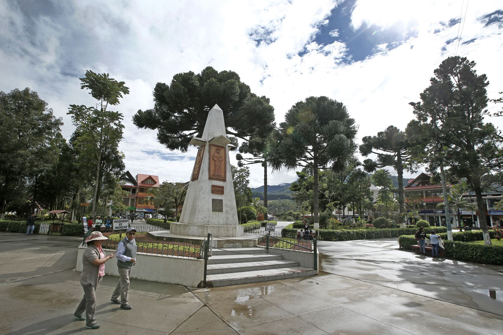
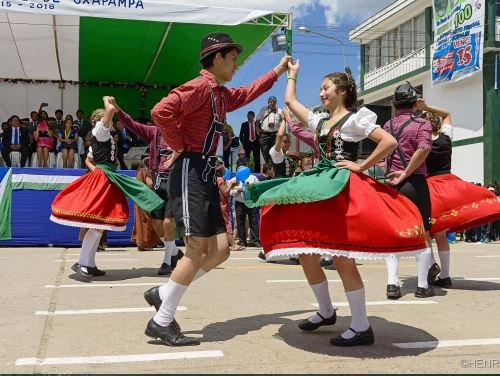
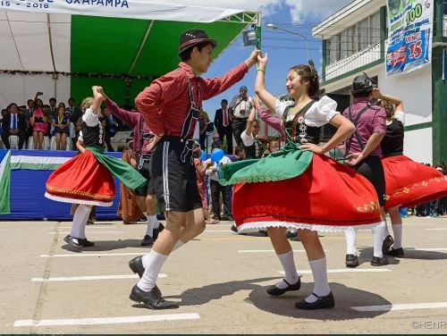
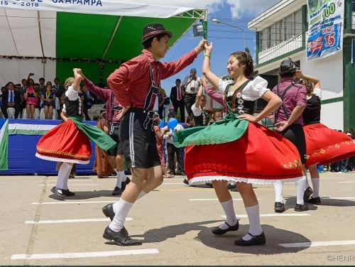

Aniversario de Oxapampa: Celebración de su historia y cultura
El Aniversario de Oxapampa es una festividad anual que conmemora la fundación de esta hermosa ciudad. Durante la celebración, se llevan a cabo desfiles, actividades culturales, ferias gastronómicas y eventos tradicionales que resaltan la riqueza cultural de la región.
Actividades
El aniversario de Oxapampa ofrece diversas actividades, como presentaciones artísticas, danzas típicas, concursos, festivales musicales y la tradicional serenata a la ciudad. También se realizan homenajes a los fundadores y exposiciones sobre la historia local.

 


Horarios y Ubicación
- Ubicación: Oxapampa, región Pasco, Perú.
- Fecha del evento: 30 de agosto, día central de la celebración.
- Entrada: Acceso libre a la mayoría de actividades.
Consejos para Visitantes
- Llega temprano: Para disfrutar de los desfiles y eventos principales.
- Prueba la gastronomía local: Durante la celebración se pueden degustar platos típicos de la región.
- Viste ropa cómoda: Hay muchas actividades al aire libre y eventos masivos.
- Infórmate sobre el programa: Consulta la agenda oficial para no perderte ninguna actividad importante.
- Respeta las tradiciones: Disfruta y aprende sobre la cultura local con respeto y entusiasmo.